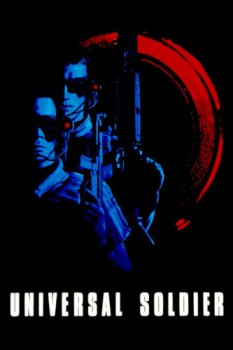

Country:United States, 102 minutes
Spoken languages:English
Genres:Thriller, Action, Sci-Fi
Director(s):Roland Emmerich
Writer(s):Richard Rothstein, Christopher Leitch, Dean Devlin
Video Codec:Unknown
Number: 1746

Certification:R
Storyline:
An American soldier who had been killed during the Vietnam War is revived 25 years later by the military as a semi-android, UniSols, a high-tech soldier of the future. After the failure of the initiative to erase all the soldier's memories, he begins to experience flashbacks that are forcing him to recall his past.
Cast:
Jean-Claude Van Damme (as Luc Deveraux / GR44), Dolph Lundgren (as Andrew Scott / GR13), Ally Walker (as Veronica Roberts), Ed O'Ross (as Colonel Perry), Ralf Moeller (as GR76)
Medium: Media file,
Location: D:\Jean Claude Van Damme\Universal Soldier (1992) [1080p]\Universal.Soldier.1992.1080p.BrRip.x264.bitloks.YIFY.mp4
Loaned: No
Aspect ratio: Unknown